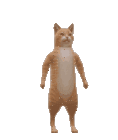
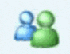
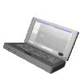
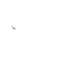

★ WELCOME TO MY LITTLE CORNER OF THE WORLD WIDE WEB ★ Paint some pixels! Make some history! ★ NO SIGN-UP! JUST SQUARES! ★
~*~ EST. IN CYBERSPACE ~*~
GitHub Painter
Your contribution graph deserves a little CHAOS.
100% HAND-PAINTEDBEST VIEWED WITH EYEBALLSHTML POWERED

▦ paint.exe YOUR PIXEL PLAYGROUND
MonWedFri
Click or drag to paint. Right-click to erase. Arrow keys + Space work too.
★ HOT OFF THE MODEM ★
Take your pixels home!
Download a script that creates a new repository on your computer.
You choose when to publish it to your GitHub account.
Your existing contributions will add to this pattern. Green shades are a preview; GitHub determines the final colors.


01
Paint a year
Choose a shade and draw on any past date. Each shade creates 1, 5, 10, or 20 commits.
02
Run your script
With Python 3 and Git installed, run python contribution-art.py in a terminal.
03
Make it live
Run with --publish to create a public GitHub repo using an authenticated GitHub CLI.

You've reached the end of the internet!
Thanks for surfing by. Please feed the shark on your way out.